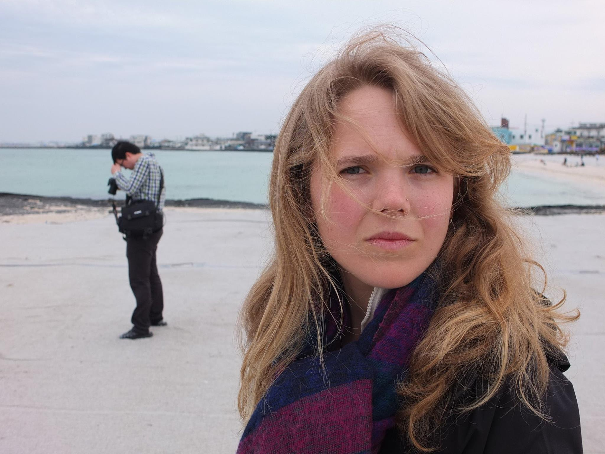

Asali Echols has worked on numerous film projects in the Bay Area and Los Angeles. She edited the award-winning feature documentary 2e: Twice Exceptional (2014), and most recently completed Navajo Math Circles, now airing nationwide on PBS.
In addition to her documentary work, Asali writes screenplays and has worked in the worlds of theater and education.
She graduated from UC Berkeley in 2011.
Contact: asalirechols@gmail.com. 805.704.5824